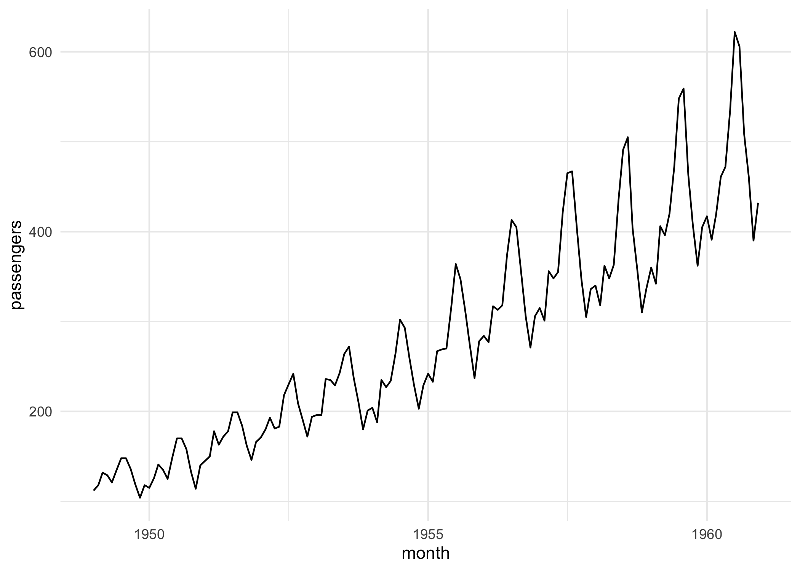

Extending mlr3 to time series forecasting.
This package is in an early stage of development and should be considered experimental. If you are interested in experimenting with it, we welcome your feedback!
Installation
Install the development version from GitHub:
# install.packages("pak")
pak::pak("mlr-org/mlr3forecast")Usage
mlr3forecast extends the mlr3 ecosystem to time series forecasting. It introduces a forecasting task, forecasting learners, temporal resampling strategies, forecasting measures, and feature-engineering pipe operators, so that forecasters behave like any other mlr3 learner — ready for tuning, benchmarking, pipelines, and ensembling.
At a glance, mlr3forecast provides:
Classical forecasters wrapping forecast, smooth, prophet, and tscount — over 30 in total, from baselines (
fcst.mean,fcst.random_walk) to ARIMA (fcst.auto_arima), ETS, theta, TBATS, prophet, neural nets (fcst.nnetar), and count models (fcst.tscount). Seemlr_learners$keys("^fcst")for the full list.Machine learning forecasting that turns any
regrlearner into a forecaster via lag features, with both recursive (one model applied iteratively) and direct (one model per horizon) strategies.Forecasting tasks and temporal resamplings (
fcst.holdout,fcst.cv) that respect the order of observations, plus global (longitudinal) forecasting across many series.Feature-engineering pipe operators such as
fcst.lags,fcst.rolling,fcst.fourier,fcst.feasts, andfcst.tsfeats.Forecasting measures including MASE, RMSSE, Pinball, Winkler, coverage, and MSIS (see
mlr_measures$keys("^fcst")for the full list).Full mlr3 integration: tuning with mlr3tuning, benchmarking, target transformations, and ensembling with mlr3pipelines.
Example tasks to get started —
airpassengers,electricity,livestock,lynx, andusaccdeaths. List them withas.data.table(mlr_tasks)[task_type == "fcst"].
For now the forecasting task and learner are restricted to time series regression, but may be extended to classification in the future.
Jump to the examples for:
- Classical forecasters
- Machine learning forecasters
- Benchmarking, ensembling, and tuning
- Global forecasting
Classical forecasters
Native forecasting learners are provided by packages such as forecast, smooth, prophet, and tscount.
library(mlr3forecast)
library(mlr3pipelines)
library(ggplot2)
task = tsk("airpassengers")
task
#>
#> ── <TaskFcst> (144x1): Monthly Airline Passenger Numbers 1949-1960 ─────────────
#> • Target: passengers
#> • Properties: ordered
#> • Order by: month
#> • Frequency: month
# or plot the task
autoplot(task)
# train a forecast learner
learner = lrn("fcst.auto_arima")$train(task)
prediction = learner$predict(task, 140:144)
prediction
#>
#> ── <PredictionRegr> for 5 observations: ────────────────────────────────────────
#> row_ids truth response month
#> 140 606 623.9219 1960-08-01
#> 141 508 513.8585 1960-09-01
#> 142 461 450.7762 1960-10-01
#> 143 390 410.8961 1960-11-01
#> 144 432 439.9462 1960-12-01
prediction$score(msr("regr.rmse"))
#> regr.rmse
#> 13.85518To forecast beyond the observed data, generate_newdata() builds the future rows (with missing targets) and predict_newdata() fills them in:
# generate new data to forecast unseen data
newdata = generate_newdata(task, 12L)
head(newdata)
#> month passengers
#> 1: 1961-01-01 NA
#> 2: 1961-02-01 NA
#> 3: 1961-03-01 NA
#> 4: 1961-04-01 NA
#> 5: 1961-05-01 NA
#> 6: 1961-06-01 NA
prediction = learner$predict_newdata(newdata, task)
prediction
#>
#> ── <PredictionRegr> for 12 observations: ───────────────────────────────────────
#> row_ids truth response month
#> 1 NA 445.6351 1961-01-01
#> 2 NA 420.3953 1961-02-01
#> 3 NA 449.1988 1961-03-01
#> --- --- --- ---
#> 10 NA 494.1275 1961-10-01
#> 11 NA 423.3336 1961-11-01
#> 12 NA 465.5085 1961-12-01The forecast() helper combines these two steps, generating the future rows and predicting them in a single call:
forecast(learner, task, 12L)
#>
#> ── <PredictionRegr> for 12 observations: ───────────────────────────────────────
#> row_ids truth response month
#> 1 NA 445.6351 1961-01-01
#> 2 NA 420.3953 1961-02-01
#> 3 NA 449.1988 1961-03-01
#> --- --- --- ---
#> 10 NA 494.1275 1961-10-01
#> 11 NA 423.3336 1961-11-01
#> 12 NA 465.5085 1961-12-01Target transformations can be applied by wrapping the learner in ppl("targettrafo"):
# add a target log transformation
learner = as_learner(ppl(
"targettrafo",
graph = lrn("fcst.auto_arima"),
targetmutate.trafo = function(x) log(x),
targetmutate.inverter = function(x) list(response = exp(x$response))
))
prediction = learner$train(task)$predict(task, 140:144)
prediction$score(msr("regr.rmse"))
#> regr.rmse
#> 12.29896Which predict types a learner supports (e.g. "quantiles", "se") is listed in its predict_types:
lrn("fcst.auto_arima")$predict_types
#> [1] "response" "quantiles"Classical forecasters can then return a predictive distribution as quantiles, scored with probabilistic measures such as the Pinball loss:
# works with quantile response
learner = lrn(
"fcst.auto_arima",
predict_type = "quantiles",
quantiles = c(0.1, 0.15, 0.5, 0.85, 0.9),
quantile_response = 0.5
)$train(task, 1:132)
learner$predict_newdata(newdata, task)
#>
#> ── <PredictionRegr> for 12 observations: ───────────────────────────────────────
#> row_ids truth q0.1 q0.15 q0.5 q0.85 q0.9 response month
#> 1 NA 410.6811 413.2496 424.1099 434.9702 437.5387 424.1099 1961-01-01
#> 2 NA 390.2142 393.4355 407.0557 420.6759 423.8972 407.0557 1961-02-01
#> 3 NA 450.7334 454.5764 470.8257 487.0751 490.9181 470.8257 1961-03-01
#> --- --- --- --- --- --- --- --- ---
#> 10 NA 436.9438 443.6242 471.8707 500.1173 506.7976 471.8707 1961-10-01
#> 11 NA 390.3115 397.3040 426.8707 456.4374 463.4300 426.8707 1961-11-01
#> 12 NA 431.7490 439.0404 469.8707 500.7011 507.9925 469.8707 1961-12-01
learner$predict(task, 133:144)$score(msr("fcst.pinball"))
#> fcst.pinball
#> 11.38111Forecasting resamplings respect the temporal order of the observations:
Machine learning forecasters
Any regression learner can be turned into a forecaster with recursive_forecaster(), which adds lag features and forecasts recursively:
library(mlr3learners)
task = tsk("airpassengers")
learner = lrn("regr.ranger")
flrn = recursive_forecaster(learner, lags = 1:12)$train(task)
newdata = generate_newdata(task, 12L)
prediction = flrn$predict_newdata(newdata, task)
prediction
#>
#> ── <PredictionRegr> for 12 observations: ───────────────────────────────────────
#> row_ids truth response month
#> 1 NA 446.2509 1961-01-01
#> 2 NA 448.8850 1961-02-01
#> 3 NA 468.0311 1961-03-01
#> --- --- --- ---
#> 10 NA 497.0462 1961-10-01
#> 11 NA 457.9251 1961-11-01
#> 12 NA 458.8529 1961-12-01
prediction = flrn$predict(task, 140:144)
prediction
#>
#> ── <PredictionRegr> for 5 observations: ────────────────────────────────────────
#> row_ids truth response month
#> 140 606 564.3768 1960-08-01
#> 141 508 510.6362 1960-09-01
#> 142 461 461.5428 1960-10-01
#> 143 390 418.9087 1960-11-01
#> 144 432 443.4447 1960-12-01
prediction$score(msr("regr.rmse"))
#> regr.rmse
#> 23.26557
flrn = recursive_forecaster(learner, lags = 1:12)
resampling = rsmp("fcst.holdout", ratio = 0.9)
rr = resample(task, flrn, resampling)
rr$aggregate(msr("regr.rmse"))
#> regr.rmse
#> 51.02657
resampling = rsmp("fcst.cv")
rr = resample(task, flrn, resampling)
rr$aggregate(msr("regr.rmse"))
#> regr.rmse
#> 33.88559Direct forecasting
recursive_forecaster() builds a recursive forecaster (one model, applied iteratively). Use direct_forecaster() with horizons to train one model per horizon instead — predictions then come straight from each horizon’s model, with no error accumulation:
task = tsk("airpassengers")
flrn = direct_forecaster(
lrn("regr.ranger"),
lags = 1:12,
horizons = 12
)$train(task, 1:132)
flrn$predict(task, 133:144)$score(msr("regr.rmse"))
#> regr.rmse
#> 55.71677Feature engineering
Lag features can be combined with other transformations using mlr3pipelines:
library(mlr3pipelines)
task = tsk("airpassengers")
task$set_col_roles("month", add = "feature")
graph = po("fcst.lags", lags = 1:12) %>>%
po(
"datefeatures",
param_vals = list(
week_of_year = FALSE,
day_of_year = FALSE,
day_of_month = FALSE,
day_of_week = FALSE
)
) %>>%
lrn("regr.ranger")
flrn = recursive_forecaster(graph)$train(task)
prediction = flrn$predict(task, 142:144)
prediction$score(msr("regr.rmse"))
#> regr.rmse
#> 16.76188Use selector_fcst_lags() to apply transformations only to the lag features, e.g. log-transforming lags while leaving date features untouched:
task = tsk("airpassengers")
task$set_col_roles("month", add = "feature")
graph = po("fcst.lags", lags = 1:12) %>>%
po("colapply", applicator = log, affect_columns = selector_fcst_lags()) %>>%
po(
"datefeatures",
param_vals = list(
week_of_year = FALSE,
day_of_year = FALSE,
day_of_month = FALSE,
day_of_week = FALSE
)
) %>>%
lrn("regr.ranger")
flrn = recursive_forecaster(graph)$train(task)
prediction = flrn$predict(task, 142:144)
prediction$score(msr("regr.rmse"))
#> regr.rmse
#> 13.70027Target transformations
Target transformations can be applied by wrapping the forecast learner in ppl("targettrafo"). The lags are created from the transformed target and predictions are automatically inverted back to the original scale:
task = tsk("airpassengers")
graph = po("fcst.lags", lags = 1:12) %>>% lrn("regr.ranger")
pipeline = ppl(
"targettrafo",
graph = recursive_forecaster(graph),
targetmutate.trafo = function(x) log(x),
targetmutate.inverter = function(x) list(response = exp(x$response))
)
learner = as_learner(pipeline)$train(task)
prediction = learner$predict(task, 142:144)
prediction$score(msr("regr.rmse"))
#> regr.rmse
#> 15.04127Ready-made po("fcst.targetboxcox") and po("fcst.targetdiff") pipeops are also available for Box-Cox transformation and differencing.
Exogenous covariates
Forecasting tasks can include exogenous covariates. Here electricity demand is forecast from its own lags, calendar features, and external regressors (temperature, holiday) supplied for the forecast horizon:
library(mlr3learners)
library(mlr3pipelines)
task = tsk("electricity")
task$set_col_roles("date", add = "feature")
graph = po("fcst.lags", lags = 1:3) %>>%
po("datefeatures", param_vals = list(year = FALSE)) %>>%
lrn("regr.ranger")
flrn = recursive_forecaster(graph)$train(task)
max_date = task$data()[.N, date]
newdata = data.table(
date = max_date + 1:14,
demand = rep(NA_real_, 14L),
temperature = 26,
holiday = c(TRUE, rep(FALSE, 13L))
)
prediction = flrn$predict_newdata(newdata, task)
prediction
#>
#> ── <PredictionRegr> for 14 observations: ───────────────────────────────────────
#> row_ids truth response date
#> 1 NA 187707.3 2015-01-01
#> 2 NA 196950.8 2015-01-02
#> 3 NA 190586.9 2015-01-03
#> --- --- --- ---
#> 12 NA 222740.3 2015-01-12
#> 13 NA 227257.2 2015-01-13
#> 14 NA 228954.2 2015-01-14Benchmarking, ensembling, and tuning
Comparing classical and ML forecasters
ML forecasters declare task_type = "fcst", so they can be benchmarked side-by-side with classical learners on the same task in a single benchmark() call:
task = tsk("airpassengers")
resampling = rsmp("fcst.holdout", ratio = 0.9)$instantiate(task)
n_test = length(resampling$test_set(1L))
learners = list(
lrn("fcst.arima", id = "arima"),
recursive_forecaster(lrn("regr.ranger"), lags = 1:12, id = "ranger_recursive"),
direct_forecaster(
lrn("regr.ranger"),
lags = 1:12,
horizons = n_test,
id = "ranger_direct"
)
)
design = benchmark_grid(task, learners, resampling)
bmr = benchmark(design)
bmr$aggregate(msr("regr.rmse"))[, .(learner_id, regr.rmse)]
#> learner_id regr.rmse
#> 1: arima 216.31005
#> 2: ranger_recursive 50.70191
#> 3: ranger_direct 52.02509Ensemble forecasting
Forecast learners produce regression predictions under the hood, so the standard mlr3pipelines ensemble pattern works directly: branch to several forecasters with gunion() and average their forecasts with po("regravg"). This mirrors the idea behind the forecastHybrid package, but with any mix of classical or ML learners.
task = tsk("airpassengers")
graph = gunion(list(
po("learner", lrn("fcst.auto_arima"), id = "arima"),
po("learner", lrn("fcst.ets"), id = "ets"),
po("learner", lrn("fcst.theta"), id = "theta")
)) %>>%
po("regravg")
flrn = as_learner(graph)$train(task)
forecast(flrn, task, 12L)
#>
#> ── <PredictionRegr> for 12 observations: ───────────────────────────────────────
#> row_ids truth response
#> 1 NA 442.5050
#> 2 NA 427.6327
#> 3 NA 478.5120
#> --- --- ---
#> 10 NA 471.2626
#> 11 NA 408.0117
#> 12 NA 455.0409
flrn$predict(task, 140:144)$score(msr("regr.rmse"))
#> regr.rmse
#> 12.23143
# weight the members instead of averaging equally
graph$param_set$set_values(regravg.weights = c(0.5, 0.3, 0.2))
flrn = as_learner(graph)$train(task)
flrn$predict(task, 140:144)$score(msr("regr.rmse"))
#> regr.rmse
#> 12.28049Tuning a forecaster
Forecast learners are regular mlr3 learners, so they plug into the standard mlr3tuning machinery. Mark hyperparameters with to_tune() and wrap the learner in an auto_tuner(), using a forecasting resampling such as fcst.holdout or fcst.cv to respect the temporal order:
library(mlr3tuning)
task = tsk("airpassengers")
# tune an ML forecaster
flrn = recursive_forecaster(lrn("regr.ranger"), lags = 1:12)
flrn$param_set$set_values(
regr.ranger.mtry.ratio = to_tune(0.1, 1),
regr.ranger.num.trees = to_tune(100, 500)
)
at = auto_tuner(
tuner = tnr("random_search"),
learner = flrn,
resampling = rsmp("fcst.cv"),
measure = msr("regr.rmse"),
term_evals = 4
)
at$train(task)
at$tuning_result[, .(regr.ranger.mtry.ratio, regr.ranger.num.trees, regr.rmse)]
#> regr.ranger.mtry.ratio regr.ranger.num.trees regr.rmse
#> 1: 0.6814331 235 25.22034
# the AutoTuner is itself a learner: predict with the best configuration
at$predict(task, 142:144)$score(msr("regr.rmse"))
#> regr.rmse
#> 13.6386Classical forecasters tune the same way:
flrn = lrn("fcst.auto_arima")
flrn$param_set$set_values(stationary = to_tune(p_lgl()), seasonal = to_tune(p_lgl()))
at = auto_tuner(
tuner = tnr("grid_search"),
learner = flrn,
resampling = rsmp("fcst.holdout", ratio = 0.8),
measure = msr("regr.rmse")
)
at$train(task)
at$tuning_result[, .(stationary, seasonal, regr.rmse)]
#> stationary seasonal regr.rmse
#> 1: FALSE TRUE 35.08279Global forecasting
In machine learning forecasting the difference between forecasting a single time series and longitudinal data is often referred to as local and global forecasting. A global model is trained jointly across many series, identified by a key:
library(mlr3learners)
library(mlr3pipelines)
library(tsibble)
dt = setDT(tsibbledata::aus_livestock)
setnames(dt, tolower)
dt[, month := as.Date(month)]
dt = dt[, .(count = sum(count)), by = .(state, month)]
setorder(dt, state, month)
task = as_task_fcst(dt, id = "aus_livestock", target = "count", order = "month", key = "state", freq = "month")
task$set_col_roles("month", add = "feature")
graph = po("fcst.lags", lags = 1:12) %>>%
po(
"datefeatures",
param_vals = list(
week_of_year = FALSE,
day_of_week = FALSE,
day_of_month = FALSE,
day_of_year = FALSE
)
) %>>%
lrn("regr.ranger")
flrn = recursive_forecaster(graph)$train(task)
prediction = flrn$predict(task, 4460:4464)
prediction$score(msr("regr.rmse"))
#> regr.rmse
#> 18500.26
resampling = rsmp("fcst.holdout", ratio = 0.9)
rr = resample(task, flrn, resampling)
rr$aggregate(msr("regr.rmse"))
#> regr.rmse
#> 107559.2Global vs. local forecasting
A single global model can be compared against fitting one local model per series:
retail = setDT(tsibbledata::aus_retail)
setnames(retail, tolower)
retail[, month := as.Date(month)]
vic = retail[state == "Victoria"]
vic[, let(state = NULL, `series id` = NULL)]
vic[, industry := as.factor(industry)]
vic_train = vic[month < as.Date("2015-01-01")]
vic_test = vic[month >= as.Date("2015-01-01")]
# global forecasting
task_train = as_task_fcst(
vic_train,
id = "aus_retail_vic",
target = "turnover",
order = "month",
key = "industry",
freq = "month"
)
task_test = as_task_fcst(
vic_test,
id = "aus_retail_vic",
target = "turnover",
order = "month",
key = "industry",
freq = "month"
)
learner = lrn("regr.ranger", verbose = FALSE)
flrn = recursive_forecaster(learner, lags = 1:12)$train(task_train)
prediction_global = flrn$predict(task_test)
prediction_global
#>
#> ── <PredictionRegr> for 960 observations: ──────────────────────────────────────
#> row_ids truth response industry month
#> 1 476.2 470.2078 Cafes, restaurants and catering services 2015-01-01
#> 2 422.0 455.6845 Cafes, restaurants and catering services 2015-02-01
#> 3 471.2 484.1151 Cafes, restaurants and catering services 2015-03-01
#> --- --- --- --- ---
#> 958 359.2 399.3639 Takeaway food services 2018-10-01
#> 959 354.9 405.4836 Takeaway food services 2018-11-01
#> 960 393.2 412.3130 Takeaway food services 2018-12-01
prediction_global$score(msr("regr.rmse"))
#> regr.rmse
#> 83.93126
# local forecasting
prediction_local = map(split(vic, by = "industry", drop = TRUE), function(dt) {
task_train = as_task_fcst(
dt[month < as.Date("2015-01-01")],
id = "aus_retail_vic_local",
target = "turnover",
order = "month",
freq = "month"
)
task_test = as_task_fcst(
dt[month >= as.Date("2015-01-01")],
id = "aus_retail_vic_local",
target = "turnover",
order = "month",
freq = "month"
)
flrn = recursive_forecaster(learner, lags = 1:12)$train(task_train)
prediction = flrn$predict(task_test)
prediction
})
do.call(c, prediction_local)$score(msr("regr.rmse"))
#> regr.rmse
#> 95.02372